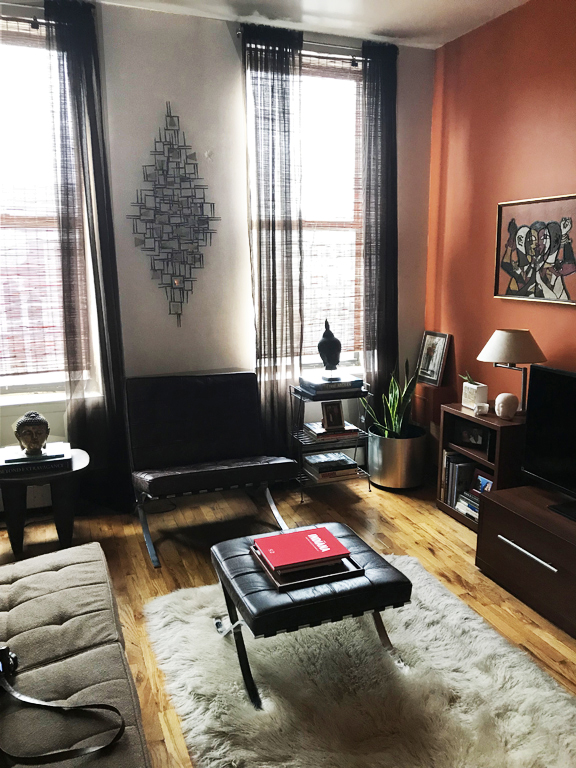
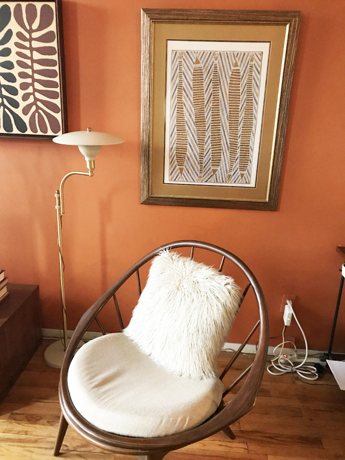
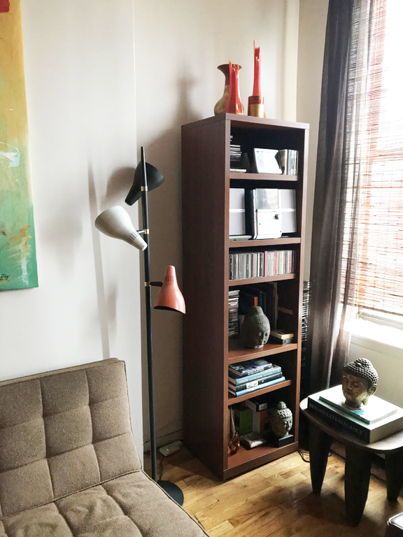

This issue’s theme is the handmade. In the age of Instagram, it seems we have to defend the importance of making things by hand more than ever, especially in our world of furniture, fabrics, architecture, and interiors. We wanted to get your thoughts on the topic, especially as it relates to this project. To start, there’s a lot of wood.
My apartment building faces the busy Avenue, but I am in the back of the building. That is good and bad. It is good because it is quiet and away from the noise. It is bad because I do not get a tremendous amount of light. My apartment is a reflection of my love for art and artists. I have a lot of pieces hanging on the walls that I have purchased while traveling all over the world. I have a minimal sensibility and I love antiques. I believe in having classic pieces that will last a lifetime. I guess you could say that my color scheme is earthy. My bathroom is bright red though.
My favorite room is my living room. It is where I read, watch TV and listen to music. I have an extensive CD Collection and I have a stereo that I play records on. I like to entertain, so I have a lot of places for people to sit. I have a pair of curtains that I got from Ikea that are shear and they go from floor to ceiling. I love that I only payed a little bit of money for them, but they looks so rich and expensive. I have an antique table and art that I purchased from an amazing Mexican artist. I hope to get more artwork when I travel for my birthday this year. I need some new pieces.
This 1912 brick townhouse has old charm with modern renovations. The space has five bedrooms, seven bathrooms, and a massive indoor pool. Luxury features include double-height ceilings, antique Parisian brickwork, and a variety of glamorous chandeliers. Arguably one of her most beautiful homes, the attention to detail extends to the rooftop terrace, outdoor kitchen, jacuzzi and built-in barbecue.